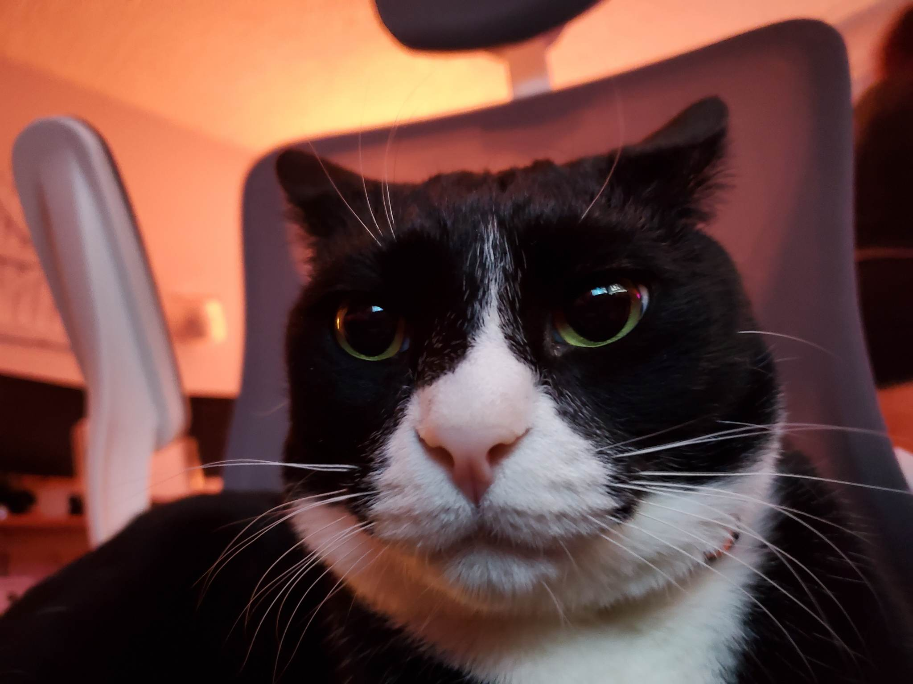

Meet Figaro
Figaro is the best cat ever. Here are some facts about him:
- Name: Figaro
- Age: 5 years old
- Breed: Tuxedo
- Color: Black and white

Isn't he so sophisticated?
Figaro's Favorite Things
Figaro loves to play and cuddle. Here are some of his favorite things:
- Chasing that mysterious red spot
- Cuddling with his humans
- Starring out the window pandering life's meaning
More About Cats
If you want to a figaro of your own, here are some helpful resources: